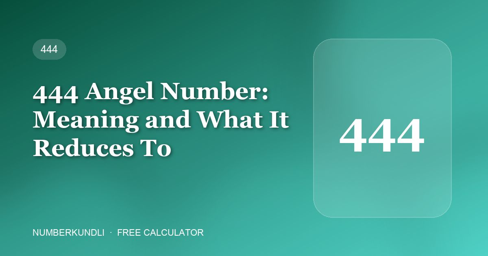

444 Angel Number: Meaning and What It Reduces To

444 is, after 1111, the most searched angel number — and the one people most often report noticing during a difficult stretch. Its reading is the most reassuring in the whole set, which is probably not a coincidence.
What it is said to mean
444 is read as stability and protection: foundations holding, structure being in place, the work you are doing being solid even if it does not feel that way yet. Where 1111 is about a beginning and 555 about change, 444 is the one that says nothing is falling apart.
The reasoning given is that 4 is the number of structure — four walls, four legs on a table, four corners — so three of them is structure emphasised.
What 444 is in actual numerology
Add the digits: 4 + 4 + 4 = 12, and 1 + 2 = 3. In Indian numerology 3 is Jupiter — knowledge, guidance, expansion and teachers.
This one lines up better than most. Jupiter is the traditional benefic, the planet of protection and good counsel, so the folklore reading and the Chaldean reduction point in roughly the same direction. That is unusual across these sequences and worth noting when it happens.
The individual digit is a different story. 4 on its own is Rahu, which Indian numerology treats cautiously — the opposite of comforting. The sequence reduces to something benign; the digit it is made of does not. Both things are true.
Why people see it in hard times
This is the part that explains the sequence's reputation. The frequency illusion needs a reason for a number to become salient in the first place. For many people, 444 becomes salient precisely when they are anxious and looking for reassurance — and once it is salient, they start seeing it everywhere.
So the pattern most people describe — "I kept seeing 444 during the worst month of my life" — has the causation the other way round. The difficulty came first; it made you receptive; the number followed. That is not a reason to dismiss the comfort it gave, which was real.
A fair way to use it
If seeing 444 steadies you, there is nothing wrong with that. The caution is the same as for every sequence: do not let it stand in for a decision. A number that tells you your foundations are solid is a nice thing to believe and a poor substitute for checking whether they are.
444 and your own numbers
Because 444 reduces to 3, the question numerology can actually answer is whether 3 is friendly to your Birth and Destiny numbers. For many people it is — 3 is one of the more widely compatible numbers, which is partly why a 3-rooted sequence feels agreeable. Check yours with the angel number calculator, and if 3 is a balancer for you, it is worth using deliberately in a PIN or password rather than only noticing it on a clock.
Frequently asked questions
Is 444 a warning?
No. Of all the commonly reported sequences it has the most reassuring reading — stability and protection. It reduces to 3, which is Jupiter, the traditional benefic.
Why do I see 444 when I am stressed?
Most likely because the stress came first. Anxiety makes you receptive to reassurance, which makes the number salient, after which the frequency illusion does the rest.
What is the difference between 444 and 4444?
4444 adds to 16, which reduces to 7 — Ketu, associated with introspection rather than structure. The extra digit changes the root completely, which is a good illustration of how arbitrary the sequence meanings are.
Is 4 unlucky in Indian numerology?
It is treated with caution, especially in a mobile number, because 4 is Rahu. That sits oddly with 444's comforting reputation — the sequence reduces to 3, but its digits are 4s.